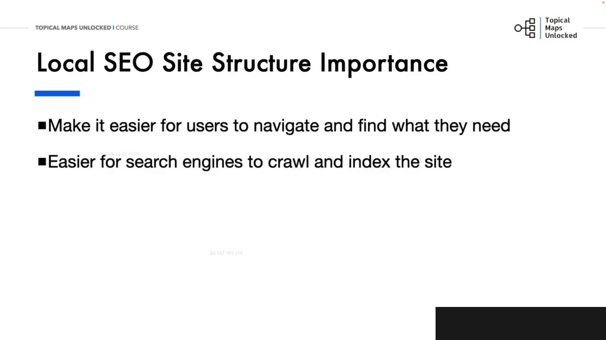
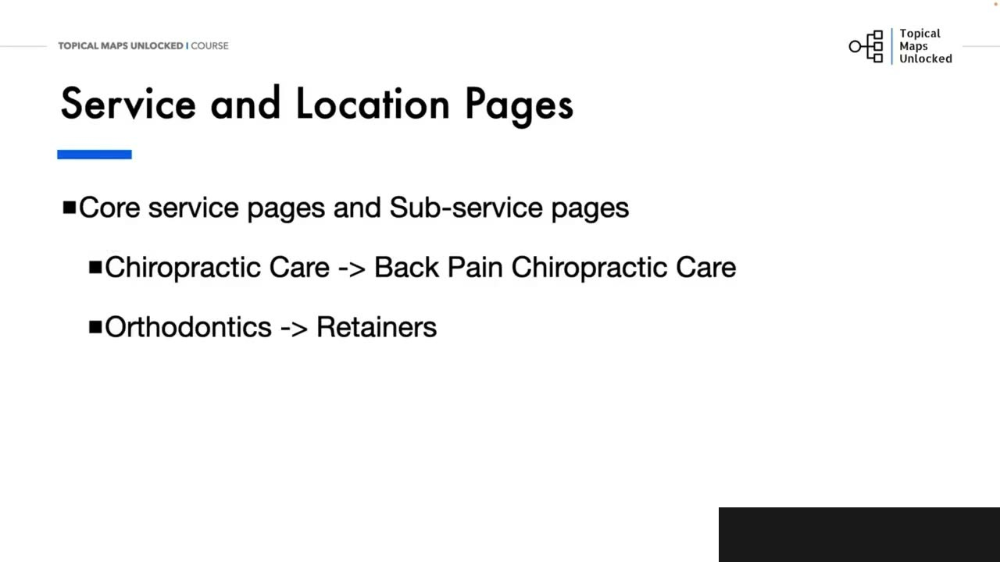
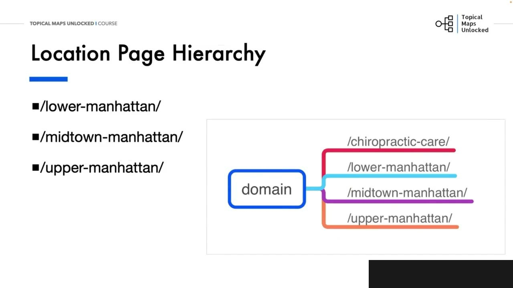
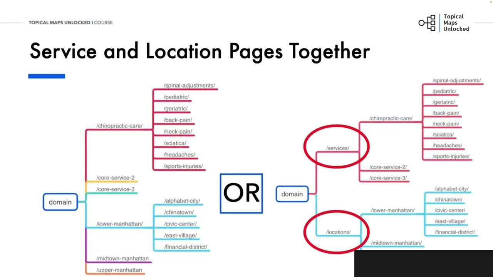
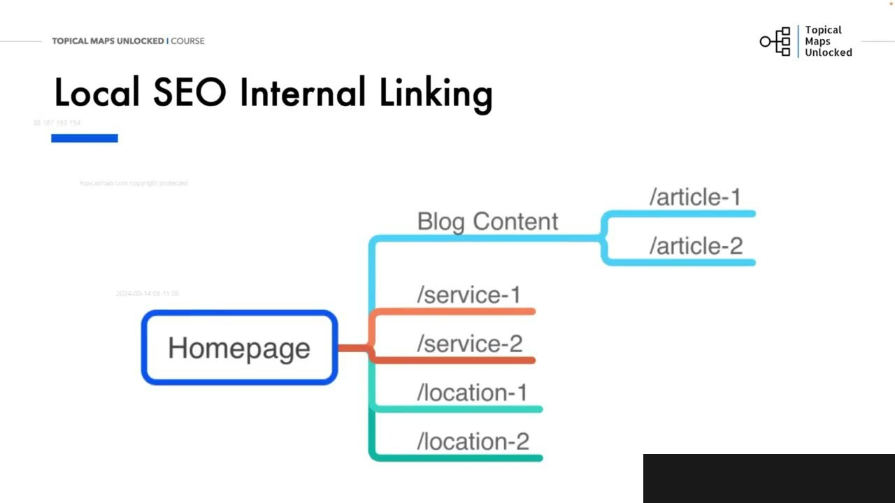
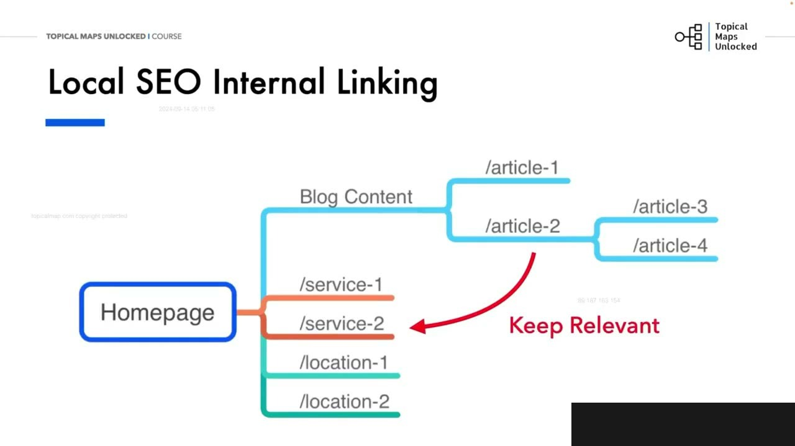

Local SEO Site Structure and Internal Linking Strategies
1. Vì sao site structure quyết định Local SEO
Diễn giải chi tiết: Xeo Đị Phương cấu trúc trang web và chiến lược liên kết nội bộ. Chúng ta sẽ khám phá cách tối yêu hóa kiến chúc trang web và liên kết nội bộ để tăng cường khả năng hiển thị tìm kiếm Đị Phương và cải thiện trải nhịn người dùng. Một trang web có cấu trúc tốt là quan trọng cho sự thành công của Xeo Đị Phương. Nó cải thiện điều hướng người dùng, giúp khách hàng tìm năng dễ dàng tìm thấy thông tin hò cân. Nó cũng cải thiện việc thu thập dữ liệu và lập chỉ mục công cụ tìm kiếm. Tổ chúc trang web giúp các công cụ tìm kiếm hiểu rõ hơn về nội dung trang web của bạn và sự liên quan Đị Phương. Điều đó có thể dẫn bến việc tăng thứ hàng tìm kiếm Đị Phương của bạn và tăng tỷ lệ chuyển đổi. Trong bài học trước, chúng ta đã đề cập đến điều đó, các trang xeo Đị Phương có các loại trang giống như các trang nội dung và hầu hết các trang web khác với các trang dịch vụ hoặc sản phẩm bổ sung và các trang vị trí. Chúng ta vẫn có trang chủ với tên nhân nghiệp của bạn, vị trí, dịch vụ chính, các trang giới thiệu và nội dung của bạn, blog và các trang nội dung, các trang dịch vụ hoặc sản phẩm riêng lẻ và các trang vị trí. Sơ độ tư duy ở đây bao quát những gì nó sẽ trông như thế nào về mặt hình ảnh với tất cả chúng ở cùng một cấp độ. Và sau đó bạn có thể xây dựng các trang chủ đề phụ và hệ thống phân cấp cho, các trang khác nhau của bạn. Hãy xem xét chỉ hơn cách thiệt liền điều đó. Các trang dịch vụ và vị trí có thể được chia nhỏ hơn nữa thành các dịch vụ phụ và các vị trí cụ thể hơn. Các trang dịch vụ cốt lõi là các trang bao quát các dịch vụ rộng hơn, và các trang dịch vụ phụ là những trang tập trung vào một dịch vụ cụ thể hơn. Hai ví dụ ở đây. Chăm sóc chỉnh hình tổng quát là trang dịch vụ chính, và sau đó là một trang dịch vụ phụ về. Chăm sóc chỉnh hình đau lưng. Một ví dụ khác chính nha. Là trang dịch vụ chính và miền
Site architecture và internal linking tốt giúp tăng local visibility, cải thiện user experience, điều hướng, crawl và index. Search engine hiểu rõ hơn nội dung cùng relevance theo địa phương, từ đó có thể cải thiện local ranking và conversion rate.

2. Các nhóm trang và hai tầng dịch vụ
Diễn giải chi tiết: căng, là một trang dịch vụ phụ cụ thể. Các trang vị trí sẽ bao quát các khu vực dịch vụ cho các doanh nghiệp đị phương. Ví dụ, để bao quát khu vực đồng lớn của Manhattan, New York, bạn có thể có 3 trang vị trí phụ với lao Manhattan, mi đau Manhattan và upper Manhattan. Thọt bạn có thể đi vào các khu phố cụ thể. Với chăm sóc chỉnh hình, bạn có thể có một số chuyên ngành về chăm sóc chỉnh hình. Bạn có cần tất cả các trang dịch vụ này không? Vâng, bạn muốn xem đối thủ của bạn đang làm gì và liệu nó có cần thiết hay không? Bạn cũng muốn xem liệu do nhịt cụ thể của bạn có phù hợp hay không? Với chắc dịch vụ phụ, với các trang vị trí, tôi thấy nhiều người tạo một thư mục phụ vị trí, nhưng tôi không chắc điều đó thực sự cần thiết. Có một thư mục vị trí và sau đó là 3 khu vực khác nhau của ấm Manhattan. Các thuật toán của công cụ tìm kiếm bây giờ, đủ thông minh để biết rằng lâu Manhattan, Midao Manhattan và Upma Manhattan là các địa điểm. Vì vậy, chúng đã có các thuật tính chỉ ra vị trí. Chúng tôi đã thấy những thuật tính đó trong bài học trước, nơi chúng tôi đã đề cập đến tài liệu API của Google. Vì vậy, với các trang vị trí, tôi thích chỉ cần tiến hành và có các địa điểm khác nhau. Ở cấp độ cao nhất. Bạn có thể thấy rằng mỗi địa điểm trong 3 địa điểm của Manhattan, đều ở cùng cấp độ với trang dịch vụ chăm sóc chỉnh hình. Các sắp xếp ở đây cũng tạo ra một liên kết nội bộ rõ ràng, vì chúng ở cùng cấp độ phân cấp chỉ kết tên minh. Trang lâu Manhattan có thể liên kết đến trang chỉnh hình, trang dịch vụ chăm sóc và ngược lại. Tương tự như các dịch vụ cốt lõi được chia nhỏ thành, các dịch vụ phụ, bạn có thể chia nhỏ các khu vực cốt lõi thành. Các địa điểm phụ. Với ví dụ về Manhattan một lần nữa, bạn có thể đi sâu vào các khu phố khác nhau của mỗi địa điểm. Ví dụ, lâu Manhattan có các khu phố khác nhau như Anphabet City, Chinatown,
Website có homepage, about/content, blog, service/product pages và location pages. Từ mind map tổng thể có thể xây hierarchy. Core service page bao quát dịch vụ rộng, sub-service page tập trung dịch vụ cụ thể hơn, ví dụ general chiropractic care và back pain chiropractic care, hoặc dentistry và implants. Location pages cũng có thể chia thành vùng và khu vực chi tiết.

3. Manhattan và quyết định về location folder
Diễn giải chi tiết: Civic Center, East Village, và Finasio District. Bây giờ, từ một cấp độ cao hơn, có 2 cách để xem. Các bạn có thể thiết lập các trang dịch vụ và địa điểm cùng nhau. tất cả đều ở cung cấp độ cao nhất của trang chủng. Mục vị chọn khác là tạo nó với các thư mục con dịch vụ và địa điểm, nhưng tôi không cảm thấy điều đó là cần thiết. Tôi chưa thấy bất kỳ lợi ít nào trong thử nghiện của mình đối với một thư mục con bổ sung. Không có thư mục con cũng loại bỏ mục. Cấp độ thu thập thông tin, cho các bó cổ công cụ tìm kiếm. Nhưng khi bạn đang quyết định, hãy nhìn vào các đối thủ hàng đầu của bạn và xem họ đang làm gì. To thể đó là cách Google ưu thích cho địa điểm, dịch vụ hoặc sản phẩm của bạn. Bây giờ, nếu bạn đang thắc mắc tại sao tôi sử dụng dịch vụ chăm sóc nắng xương ở cấp độ đó mà không có các dịch vụ chăm sóc nắng xương khác ở cấp độ cao nhất, thì đó là vì tôi đã xem xét các đối thủ cạnh trên hàng đầu và tìm hiểu về nắng xương. Ngành tôn nghiệp. Chăm sóc chỉnh hình là một dịch vụ cốt lõi được chia thành nhiều dịch vụ phụ, như đau lưng, tiền sản, đau cổ. Và tôi nhận thấy rằng các trung tâm chỉnh hình cũng cung cấp nhiều. Dịch vụ. Bạn có thể thấy các dịch vụ cốt lõi bổ sung được thêm vào trong sơ đồ tư duy. Dịch vụ cốt lõi 2, dịch vụ cốt lõi 3. Các trung tâm chỉnh hình có thể cung cấp các dịch vụ cốt lõi khác như liều pháp Masha, dịch vụ toàn diện, vật lý trị liệu, quản lý đau và nhiều hơn nữa. Liệu pháp má sa, dịch vụ toàn diện, vật lý trị liệu, quản lý đau và nhiều hơn nữa. Những dịch vụ đó có thể được chia nhỏ hơn, thành các dịch vụ phụ. Ví dụ, dịch vụ má sa có thể được chia thành má sa mô sâu, tiền sản, má sa thể thao và nhiều hơn nữa. Khi nói đến liên kết nội bộ, chúng tôi thường cố gắng không nhảy qua các silo với các liên kết vì nó có thể trở nên lộn xộn và bạn sẽ mất đi giá trị
Một vùng như Manhattan có thể chia thành Lower Manhattan, Midtown Manhattan và Upper Manhattan, rồi đi sâu tới neighborhood. Không nhất thiết phải tạo mọi trang; cần xem competitor và mức phù hợp của business. Search engine đã nhận ra các tên địa điểm, nên location pages có thể nằm cùng cấp cao nhất với core service thay vì bắt buộc có subfolder location.

4. Cấu trúc phẳng và crawl depth
Diễn giải chi tiết: liên kết, đến chắc trang quan trọng của bạn. Nhưng với sao đề phương, bạn có các trang dịch vụ hoặc sản phẩm và, các trang địa điểm. Đó là các trang quan trọng của bạn vì chúng là những trang cố gắng chuyển đổi khách truy cập của bạn thành người mua hoặc liên hệ với bạn, đặt lực hèn. Đối với trách bài viết, bạn vẫn có cấu trúc chủ đề và quy trình liên kết nội bộ của mình. Nhưng, bạn cũng muốn tìm cơ hội để liên kết đến chắc trang quan trọng của bạn. Vì vậy, nếu bài viết 2 thảo lận về một vấn đề mà dịch vụ 2 có thể giải quyết, hãy liên kết từ bài viết 2 đến trang dịch vụ 2. Và nếu bài viết 2 mô tả một vấn đề của địa điểm 1, hãy tạo liên kết nội bộ từ bài viết 2 đến trang địa điểm 1. Và khi bạn có nhiều cấp độ trong các bài viết của mình, bạn cũng không cần phải ép buộc liên kết đến các trang dịch vụ hoặc địa điểm. Hãy để các liên kết tự nhiên vì độc dạ của bạn sẽ nhìn thấy các liên kết bị ép buộc. Và nếu họ nhấp vào chúng, họ sẽ thấy rằng trang kết quả không liên quan. sẽ nhìn thấy các liên kết bị ép bù và nếu họ nhấp vào chúng, họ sẽ thấy rằng trang cất quả không liên quan. Vì vậy, nếu chỉ có ý nghĩa khi bài viết 4 liên kết đến bài viết 2 thì hãy làm điều đó. Dữ lại giá trị liên kết và dùng hết cho bài viết 2 vì nó vẫn liên quan đến chủ đề. Sau đó, giá trị liên kết cao hơn. Của bài viết 2 sẽ được chuyển cho trang, dịch vụ 2. Chúng ta biết từ các bằng sáng chế của Google và rò rỉ API rằng họ theo dõi. Sự liên quan về chủ đề thông qua cách liên kết nội bộ. Vì vậy, chúng ta muốn đảm bảo rằng cách liên kết đến và đi của bạn đều liên quan đến chủ đề. Đừng liên kết. Một cách bừa bãi. Đừng liên kết chỉ vì bạn nghĩ rằng bạn cần phải liên kết. Đó là cách nhanh nhất để làm rối loạn các thuật toán của công cụ tìm kiếm và người dùng khi họ nhấp vào và thấy. Chắc chẳng đích thông liên quan.
Service và location ở cùng cấp giúp internal linking rõ ràng. Có thể đặt chúng trực tiếp dưới homepage hoặc dùng service/location subfolders, nhưng bài học không thấy lợi ích cần thiết của một tầng folder bổ sung; bỏ tầng này còn giảm crawl depth. Quyết định cuối cùng nên tham chiếu top competitors vì cấu trúc của họ có thể phản ánh cách Google ưu tiên ngành đó.

5. Mở rộng core services theo ngành
Chiropractic care có thể chia thành back pain, prenatal care và neck pain. Các trung tâm còn có massage therapy, wellness services, physical therapy và pain management. Massage therapy có thể chia thành deep tissue, prenatal và sports massage. Nhánh phải phản ánh dịch vụ thực tế, demand và cách khách hàng tìm kiếm, không phải được tạo chỉ để tăng số lượng pages.

6. Internal Linking: ưu tiên trang chuyển đổi nhưng không ép
Service, product và location pages là các trang quan trọng vì chúng chuyển visitor thành buyer, lead hoặc cuộc gọi. Nếu bài viết 2 nói về vấn đề mà service 2 giải quyết, liên kết tới service 2; nếu nói về location 1, liên kết tới location 1. Nhưng không ép mọi bài liên kết trực tiếp. Nếu bài viết 4 liên quan tự nhiên tới bài 2, hãy liên kết 4 tới 2 để giữ topical relevance và link value, rồi giá trị đó có thể truyền tới service 2. Google patents và API leaks được dùng như lý do để nhấn mạnh rằng cả link đi và link đến phải liên quan. Liên kết bừa bãi sẽ làm rối người dùng và search engine khi họ gặp một trang không liên quan.

Nguồn và đối chiếu
- Video bài học chính: 12-Local SEO Module/Local SEO Site Structure and Internal Linking Strategies.mp4.
- Faithful rewrite tiếng Việt theo thứ tự lập luận; thuật ngữ SEO quan trọng giữ bằng English.